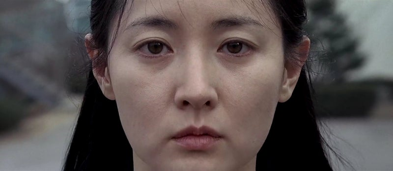
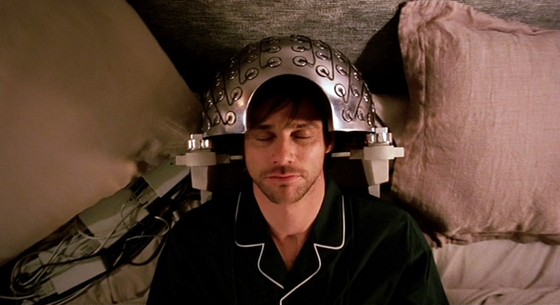
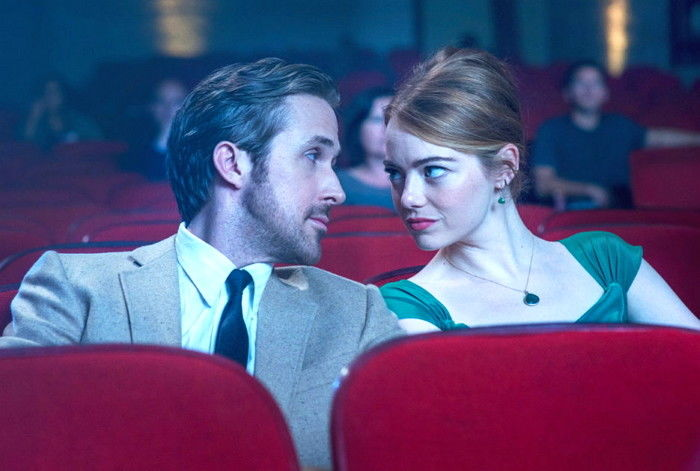
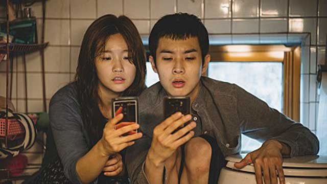
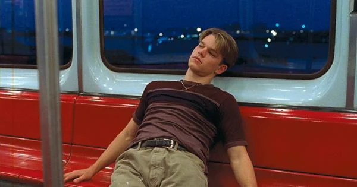
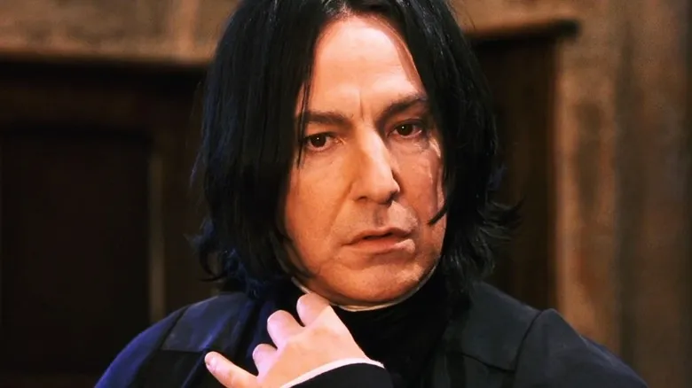

본인조차 자신의 진짜 감정을 모른 채,
반대의 행동이 진짜 마음이라고 믿게 됩니다.


잘하세요 계획을 그르칠까봐 참는거야
그냥 평범하고 지루해요. 이별이 힘들어서, 일부러 이러는거에요.
끌릴 일은 절대 없을 거예요. 이미 마음은 끌리고 있어요.
무계획이야 계획대로 되지 않는 현실을 마주하기 싫은거야
널 사랑하지 않아 나중에 버림받고 상처받을 게 무서워
오만하고 구제 불능이군 평생 숨겨온 마음 들키고 싶지 않아